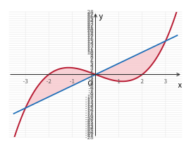
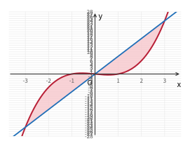
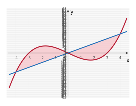

ホーム ＞ 数学II ＞ 積分法（定積分・面積）
別冊練習問題 7 の解答 3次関数と直線で囲まれた面積
(1) 曲線 \(y=x^3-4x\) と直線 \(y=5x\) で囲まれた2つの部分の面積の合計を求めよ。
交点
\[x^3-4x=5x\ \Rightarrow\ x(x^2-9)=0\ \Rightarrow\ x=0,\ \pm3\]

対称性
原点対称なので \(x\geqq0\) の部分の2倍。区間 \(0\leqq x\leqq3\) で直線が上。
面積
\[2\int_0^{3}\left(5 x-x^{3} - 4 x\right)dx=2\left[- \dfrac{x^{4}}{4} + \dfrac{9 x^{2}}{2}\right]_0^{3}=\dfrac{81}{2}\]【答案】
\[\dfrac{81}{2}\]答
(2) 曲線 \(y=x^3-x\) と直線 \(y=8x\) で囲まれた2つの部分の面積の合計を求めよ。
交点
\[x^3-x=8x\ \Rightarrow\ x(x^2-9)=0\ \Rightarrow\ x=0,\ \pm3\]

対称性
原点対称なので \(x\geqq0\) の部分の2倍。区間 \(0\leqq x\leqq3\) で直線が上。
面積
\[2\int_0^{3}\left(8 x-x^{3} - x\right)dx=2\left[- \dfrac{x^{4}}{4} + \dfrac{9 x^{2}}{2}\right]_0^{3}=\dfrac{81}{2}\]【答案】
\[\dfrac{81}{2}\]答
(3) 曲線 \(y=x^3-9x\) と直線 \(y=7x\) で囲まれた2つの部分の面積の合計を求めよ。
交点
\[x^3-9x=7x\ \Rightarrow\ x(x^2-16)=0\ \Rightarrow\ x=0,\ \pm4\]

対称性
原点対称なので \(x\geqq0\) の部分の2倍。区間 \(0\leqq x\leqq4\) で直線が上。
面積
\[2\int_0^{4}\left(7 x-x^{3} - 9 x\right)dx=2\left[- \dfrac{x^{4}}{4} + 8 x^{2}\right]_0^{4}=128\]【答案】
\[128\]答